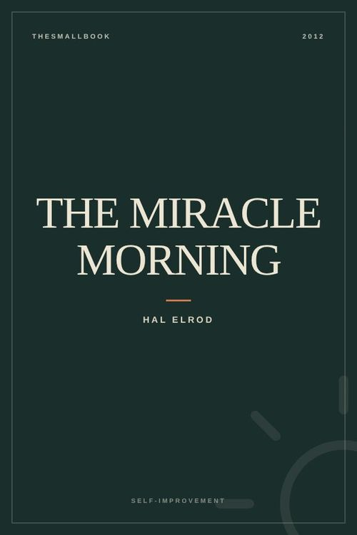
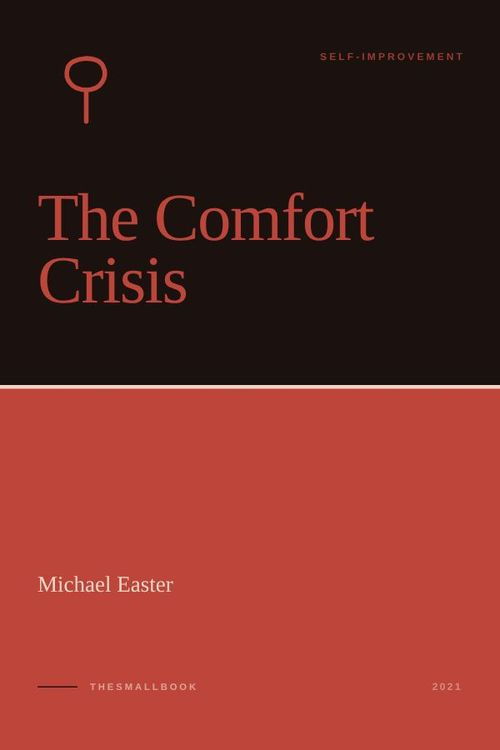
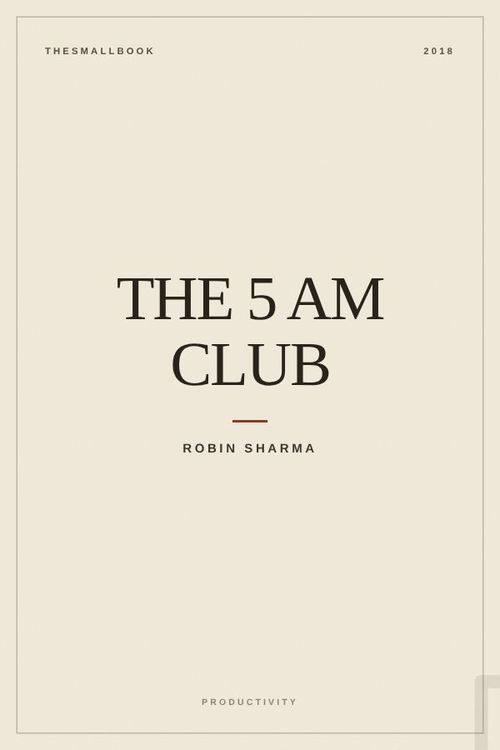

Library › Ask the Library › How do I get more energy every day?
How do I get more energy every day?
The short answer
Energy is the currency of performance, and it's physical before it's mental. Sleep, move, eat real food, and sprint with recovery, not marathons.
The books behind the answer

The Power of Full Engagement
Jim Loehr & Tony Schwartz · 2003 · 8 min · 6 lessons
Time is fixed, energy is not. Manage your energy like an athlete - full engagement, full recovery - and performance follows.
- Energy, Not Time: Time is fixed; energy is not. An hour at 90% beats three hours at 30%.

The Miracle Morning
Hal Elrod · 2012 · 8 min · 6 lessons
How you start your day sets your life. One hour, six practices, and your mornings stop being a race you're losing.
- SAVERS: How you start the day sets your energy for all of it. Move your body before the world needs you.

The Comfort Crisis
Michael Easter · 2021 · 8 min · 6 lessons
We engineered discomfort out of life and imported anxiety in its place. The fix: misogi challenges, boredom, hunger, heavy carries, and thinking about death once a day.
- The Misogi: One Epic, Doubtful Challenge a Year: Comfort is the disease. A little hardship, cold water, hard walks, is the medicine.

The 5 AM Club
Robin Sharma · 2018 · 8 min · 6 lessons
Win the first hour and you win the day: 20 minutes of sweat, 20 of reflection, 20 of growth - before the world wakes up.
- The 20/20/20 Formula: Win the morning: 20 minutes move, 20 minutes reflect, 20 minutes grow.
A failure that proves it
Why did The Vasa fail?
1628 · HISTORY · Loss: Sweden's flagship, maiden voyage
The Vasa warship was rushed to launch and sank in its own harbor. Haste without energy management sinks projects too.
A test you're afraid to report is a catastrophe on layaway. Power that can't hear 'the ship will sink' guarantees it does - build channels where bad news outranks rank.
Questions people ask next
Can I read this in Hindi?
Yes. This answer is written in simple English. Open any linked book and choose Hindi or Hinglish to read the full lessons in your language, with audio where available.